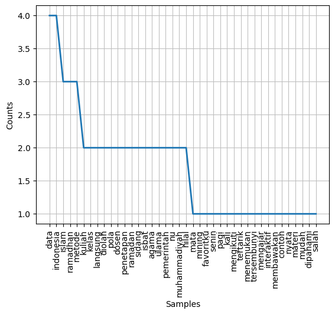

Tugas 2#
Nama: Oktaveian Aliansyah#
NIM: 220411100099#
library yang dibutuhkan#
import re
import string
import pymupdf4llm
import fitz
import nltk
from nltk.tokenize import sent_tokenize, word_tokenize
from nltk.corpus import stopwords
import matplotlib.pyplot as plt
from nltk.probability import FreqDist
from Sastrawi.Stemmer.StemmerFactory import StemmerFactory
menggabungkan file pdf#
def gabungkan_pdf(file_list, output_pdf):
doc = fitz.open()
for pdf in file_list:
with fitz.open(pdf) as temp_doc:
doc.insert_pdf(temp_doc) # Menambahkan halaman dari file lain
doc.save(output_pdf) # Menyimpan hasil gabungan
doc.close()
# Contoh penggunaan
daftar_pdf = ["../Doc/Doc1-22_099.pdf", "../Doc/Doc2-22_099.pdf"]
gabungkan_pdf(daftar_pdf, "../Doc/Doc3-22_099.pdf")
---------------------------------------------------------------------------
FileNotFoundError Traceback (most recent call last)
~\AppData\Local\Temp\ipykernel_25160\2099093874.py in ?()
7 doc.close()
8
9 # Contoh penggunaan
10 daftar_pdf = ["../Doc/Doc1-22_099.pdf", "../Doc/Doc2-22_099.pdf"]
---> 11 gabungkan_pdf(daftar_pdf, "../Doc/Doc3-22_099.pdf")
~\AppData\Local\Temp\ipykernel_25160\2099093874.py in ?(file_list, output_pdf)
1 def gabungkan_pdf(file_list, output_pdf):
2 doc = fitz.open()
3 for pdf in file_list:
----> 4 with fitz.open(pdf) as temp_doc:
5 doc.insert_pdf(temp_doc) # Menambahkan halaman dari file lain
6 doc.save(output_pdf) # Menyimpan hasil gabungan
7 doc.close()
C:\Program Files\Python312\Lib\site-packages\pymupdf\__init__.py in ?(self, filename, stream, filetype, rect, width, height, fontsize)
3035 self.page_count2 = extra.page_count_pdf
3036 else:
3037 self.page_count2 = extra.page_count_fz
3038 finally:
-> 3039 JM_mupdf_show_errors = JM_mupdf_show_errors_old
FileNotFoundError: no such file: '../Doc/Doc1-22_099.pdf'
menampilan file pdf yang sudah digabungkan#
md_text = pymupdf4llm.to_markdown("../Doc/Doc3-22_099.pdf")
print(md_text)
Processing ../Doc/Doc3-22_099.pdf...
[ ] (0/2===================[==================== ] (1/2===================[========================================] (2/2]
Mata kuliah Data Mining selalu menjadi favoritku setiap Senin pagi. Sejak pertama kali
mengikuti kelas ini, aku langsung tertarik dengan cara data dapat diolah untuk
menemukan pola tersembunyi. Dosen yang mengajar sangat interaktif dan selalu
membawakan contoh nyata yang membuat materi lebih mudah dipahami.
Salah satu hal yang paling aku sukai dari kuliah ini adalah saat kami membahas
bagaimana algoritma Page Rank bekerja dalam menentukan urutan hasil pencarian di
Google. Dosen menjelaskan dengan sederhana, kemudian kami langsung mencoba
mengimplementasikannya menggunakan Python dan OpenMPI untuk pemrosesan
paralel. Aku semakin kagum melihat bagaimana data yang awalnya tampak acak bisa
diolah menjadi informasi yang berguna.
Selain itu, diskusi di kelas selalu seru. Kami sering diberikan studi kasus, misalnya
bagaimana Netflix merekomendasikan film atau bagaimana e-commerce memprediksi
barang yang akan dibeli pelanggan. Saat sesi praktikum, aku merasa seperti seorang
detektif yang sedang mencari pola di dalam lautan data.
-----
mat Islam di Indonesia akan menyambut bulan suci Ramadhan 1446 Hijriah pada akhir
pekan ini. Bulan penuh berkah ini merupakan momen penting bagi umat Islam untuk
menjalankan ibadah puasa, sebagaimana diperintahkan dalam Al-Qur'an, Surah AlBaqarah ayat 183.
Ramadhan dimulai setelah berakhirnya bulan Syakban. Di Indonesia, penetapan awal
Ramadan dilakukan melalui sidang isbat yang digelar oleh Kementerian Agama
(Kemenag). Sidang isbat ini mengacu pada Fatwa Majelis Ulama Indonesia (MUI) Nomor
2 Tahun 2004 tentang Penetapan Awal Ramadhan, Syawal, dan Dzulhijjah.
Selain pemerintah, organisasi Islam seperti Nahdlatul Ulama (NU) dan Muhammadiyah
juga menetapkan awal Ramadan berdasarkan metode masing-masing. Muhammadiyah
menggunakan metode hisab hakiki wujudul hilal, sementara NU dan pemerintah
menggunakan metode rukyatul hilal dan kriteria MABIMS (Menteri Agama Brunei,
Indonesia, Malaysia, dan Singapura).
-----
tokenisasi kalimat#
token_kalimat = nltk.tokenize.sent_tokenize(md_text)
print(token_kalimat)
['Mata kuliah Data Mining selalu menjadi favoritku setiap Senin pagi.', 'Sejak pertama kali\nmengikuti kelas ini, aku langsung tertarik dengan cara data dapat diolah untuk\nmenemukan pola tersembunyi.', 'Dosen yang mengajar sangat interaktif dan selalu\nmembawakan contoh nyata yang membuat materi lebih mudah dipahami.', 'Salah satu hal yang paling aku sukai dari kuliah ini adalah saat kami membahas\nbagaimana algoritma Page Rank bekerja dalam menentukan urutan hasil pencarian di\nGoogle.', 'Dosen menjelaskan dengan sederhana, kemudian kami langsung mencoba\nmengimplementasikannya menggunakan Python dan OpenMPI untuk pemrosesan\nparalel.', 'Aku semakin kagum melihat bagaimana data yang awalnya tampak acak bisa\ndiolah menjadi informasi yang berguna.', 'Selain itu, diskusi di kelas selalu seru.', 'Kami sering diberikan studi kasus, misalnya\nbagaimana Netflix merekomendasikan film atau bagaimana e-commerce memprediksi\nbarang yang akan dibeli pelanggan.', 'Saat sesi praktikum, aku merasa seperti seorang\ndetektif yang sedang mencari pola di dalam lautan data.', '-----\n\nmat Islam di Indonesia akan menyambut bulan suci Ramadhan 1446 Hijriah pada akhir\npekan ini.', "Bulan penuh berkah ini merupakan momen penting bagi umat Islam untuk\nmenjalankan ibadah puasa, sebagaimana diperintahkan dalam Al-Qur'an, Surah AlBaqarah ayat 183.", 'Ramadhan dimulai setelah berakhirnya bulan Syakban.', 'Di Indonesia, penetapan awal\nRamadan dilakukan melalui sidang isbat yang digelar oleh Kementerian Agama\n(Kemenag).', 'Sidang isbat ini mengacu pada Fatwa Majelis Ulama Indonesia (MUI) Nomor\n2 Tahun 2004 tentang Penetapan Awal Ramadhan, Syawal, dan Dzulhijjah.', 'Selain pemerintah, organisasi Islam seperti Nahdlatul Ulama (NU) dan Muhammadiyah\njuga menetapkan awal Ramadan berdasarkan metode masing-masing.', 'Muhammadiyah\nmenggunakan metode hisab hakiki wujudul hilal, sementara NU dan pemerintah\nmenggunakan metode rukyatul hilal dan kriteria MABIMS (Menteri Agama Brunei,\nIndonesia, Malaysia, dan Singapura).', '-----']
menghapus angka, tanda baca dan stopword#
def text_prep(file):
file = re.sub(r"\d", "", file)
file = file.translate(str.maketrans('','',string.punctuation)).lower()
tokens = word_tokenize(file)
listStopword = set(stopwords.words('indonesian'))
file = ' '.join(kata for kata in tokens if kata not in listStopword)
return file
file = md_text
tp = text_prep(file)
print(tp)
mata kuliah data mining favoritku senin pagi kali mengikuti kelas langsung tertarik data diolah menemukan pola tersembunyi dosen mengajar interaktif membawakan contoh nyata materi mudah dipahami salah sukai kuliah membahas algoritma page rank menentukan urutan hasil pencarian google dosen sederhana langsung mencoba mengimplementasikannya python openmpi pemrosesan paralel kagum data acak diolah informasi berguna diskusi kelas seru studi netflix merekomendasikan film ecommerce memprediksi barang dibeli pelanggan sesi praktikum detektif mencari pola lautan data mat islam indonesia menyambut suci ramadhan hijriah pekan penuh berkah momen umat islam menjalankan ibadah puasa diperintahkan alquran surah albaqarah ayat ramadhan syakban indonesia penetapan ramadan sidang isbat digelar kementerian agama kemenag sidang isbat mengacu fatwa majelis ulama indonesia mui nomor penetapan ramadhan syawal dzulhijjah pemerintah organisasi islam nahdlatul ulama nu muhammadiyah menetapkan ramadan berdasarkan metode masingmasing muhammadiyah metode hisab hakiki wujudul hilal nu pemerintah metode rukyatul hilal kriteria mabims menteri agama brunei indonesia malaysia singapura
mencari frekuensi kemunculan setiap kata dan memvisualisasikan frekuensi#
mencari frekuensi kata#
# lakukan tokenize dulu
tokenize = nltk.tokenize.word_tokenize(tp)
# lalu cari frekuensi
frekuensi = nltk.FreqDist(tokenize)
print(frekuensi.most_common())
[('data', 4), ('indonesia', 4), ('islam', 3), ('ramadhan', 3), ('metode', 3), ('kuliah', 2), ('kelas', 2), ('langsung', 2), ('diolah', 2), ('pola', 2), ('dosen', 2), ('penetapan', 2), ('ramadan', 2), ('sidang', 2), ('isbat', 2), ('agama', 2), ('ulama', 2), ('pemerintah', 2), ('nu', 2), ('muhammadiyah', 2), ('hilal', 2), ('mata', 1), ('mining', 1), ('favoritku', 1), ('senin', 1), ('pagi', 1), ('kali', 1), ('mengikuti', 1), ('tertarik', 1), ('menemukan', 1), ('tersembunyi', 1), ('mengajar', 1), ('interaktif', 1), ('membawakan', 1), ('contoh', 1), ('nyata', 1), ('materi', 1), ('mudah', 1), ('dipahami', 1), ('salah', 1), ('sukai', 1), ('membahas', 1), ('algoritma', 1), ('page', 1), ('rank', 1), ('menentukan', 1), ('urutan', 1), ('hasil', 1), ('pencarian', 1), ('google', 1), ('sederhana', 1), ('mencoba', 1), ('mengimplementasikannya', 1), ('python', 1), ('openmpi', 1), ('pemrosesan', 1), ('paralel', 1), ('kagum', 1), ('acak', 1), ('informasi', 1), ('berguna', 1), ('diskusi', 1), ('seru', 1), ('studi', 1), ('netflix', 1), ('merekomendasikan', 1), ('film', 1), ('ecommerce', 1), ('memprediksi', 1), ('barang', 1), ('dibeli', 1), ('pelanggan', 1), ('sesi', 1), ('praktikum', 1), ('detektif', 1), ('mencari', 1), ('lautan', 1), ('mat', 1), ('menyambut', 1), ('suci', 1), ('hijriah', 1), ('pekan', 1), ('penuh', 1), ('berkah', 1), ('momen', 1), ('umat', 1), ('menjalankan', 1), ('ibadah', 1), ('puasa', 1), ('diperintahkan', 1), ('alquran', 1), ('surah', 1), ('albaqarah', 1), ('ayat', 1), ('syakban', 1), ('digelar', 1), ('kementerian', 1), ('kemenag', 1), ('mengacu', 1), ('fatwa', 1), ('majelis', 1), ('mui', 1), ('nomor', 1), ('syawal', 1), ('dzulhijjah', 1), ('organisasi', 1), ('nahdlatul', 1), ('menetapkan', 1), ('berdasarkan', 1), ('masingmasing', 1), ('hisab', 1), ('hakiki', 1), ('wujudul', 1), ('rukyatul', 1), ('kriteria', 1), ('mabims', 1), ('menteri', 1), ('brunei', 1), ('malaysia', 1), ('singapura', 1)]
memvisualisasikan frekuensi#
frekuensi.plot(40,cumulative=False)
plt.show()

stemming kata menggunakan sastrawi#
stem = StemmerFactory()
stemer = stem.create_stemmer()
stemming = stemer.stem(tp)
print(stemming)
mata kuliah data mining favorit senin pagi kali ikut kelas langsung tarik data olah temu pola sembunyi dosen ajar interaktif bawa contoh nyata materi mudah paham salah suka kuliah bahas algoritma page rank tentu urut hasil cari google dosen sederhana langsung coba implementasi python openmpi pemrosesan paralel kagum data acak olah informasi guna diskusi kelas seru studi netflix rekomendasi film ecommerce prediksi barang beli langgan sesi praktikum detektif cari pola laut data mat islam indonesia sambut suci ramadhan hijriah pekan penuh berkah momen umat islam jalan ibadah puasa perintah alquran surah albaqarah ayat ramadhan syakban indonesia tetap ramadan sidang isbat gelar menteri agama kemenag sidang isbat acu fatwa majelis ulama indonesia mui nomor tetap ramadhan syawal dzulhijjah perintah organisasi islam nahdlatul ulama nu muhammadiyah tetap ramadan dasar metode masingmasing muhammadiyah metode hisab hakiki wujudul hilal nu perintah metode rukyatul hilal kriteria mabims menteri agama brunei indonesia malaysia singapura